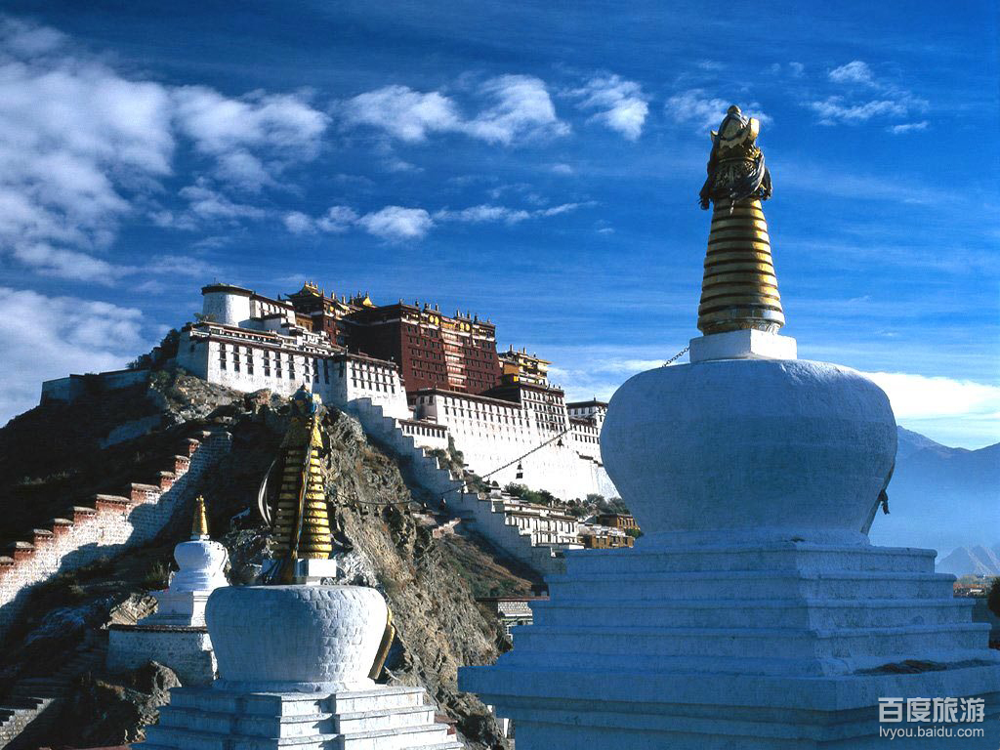
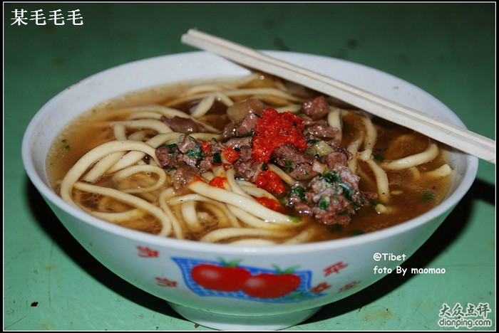

发信人: maysyc (孤云出岫), 信区: outdoor
标 题: 走近西藏-----10个基本常识
发信站: 饮水思源 (2013年06月19日03:39:36 星期三)
screen.width - 200){this.width = screen.width - 200}">
1、什么是高原反应？高原反应有哪些症状？
高原反应是人到达一定海拔高度后，身体为适应因海拔高度而造成的气压差，700
米左右时，就会有高原反应。高原反应的症状一般表现为：头痛、气短、胸闷、厌食、微
烧、头昏、乏力等。部分人因含氧量少而出现：嘴唇和指尖发紫、嗜睡、精神亢奋、睡不
着觉等不同的表现。部分人因空气干燥而出现：皮肤粗糙、嘴唇干裂、鼻孔出血或积血块
等。
2、如何避免或减轻高原反应？
大部分人初到高原，都有或轻或重的高原反应，一般什么样的人会有高原反应没有规
律可循，避免或减轻高原反应的最好方法是保持良好的心态面对它，许多的反应症状都是
心理作用或由心理作用而引起的，比如：对高原有恐惧心理，缺乏思想准备和战胜高原决
心的人，出现高原反应的机会就多。
建议初到高原地区，不可疾速行走，更不能奔跑，也不能做体力劳动，不可暴饮暴食
，以免加重消化器官负担，不要饮酒和吸烟，多食蔬菜和水果等富有维他命的食品，适量
饮水，注意保暖，少洗澡以避免受凉感冒和消耗体力。不要一开始就吸氧，尽量要自身适
应它，否则，你可能在高原永远都离不开吸氧了（依赖性非常强）。
可服用一些缓解高原反应的药品：高原红景天（至少提前10天服用）、高原安（到达
西藏后服用）、西洋参含片、诺迪康胶囊（对缓解极度疲劳很有用）、百服宁（控制高原
反应引起的头痛）、西洋参（对缓解极度疲劳很有用）、速效救心丸(不可多服)、丹参丸
（治疗心血管）、葡萄糖液（一盒五支的那种，出现高原反应的症状时服用有一定的疗效
）等等，对于高原适应力强的人，一般高原反应症状在1-2天内可以消除，适应力弱的需3
-7天。
如果您能适应酥油茶的味道，您也可以多喝一些酥油茶，对缓解高原反应也有一定的
作用。
screen.width - 200){this.width = screen.width - 200}">
3、到达西藏后有高原反应我怎么办？
西藏一般宾馆或有一定规模的城镇都有医院或卫生院，轻微的高原反应建议通过自我
调节来适应它，严重的可以看医生。出现高原反应后，应多休息，少活动，坚持进食，可
服用一些缓解高原反应的药品。
严重的高原反应，比如出现：浮肿、肺水肿、重感冒等症状，建议一定到医院输液、
吸氧等治疗，并尽快离开高原，在拉萨比较方便，每天都有进出拉萨的航班，可乘航班离
开，一般高原反应一进飞机或一到平原便消失的无影无踪，并且无任何后遗症。
4、进藏身体有何要求？哪些病人不宜进藏？是否要体检吗？需要锻炼身体吗？
进藏除了要保持良好的心态外，对于健康的身体并无特殊要求，有严重呼吸气管、心
脏、心血管、精神方面疾病的人不宜进藏，因此，对于有严重的高血压、心脏病、（支）
气管炎、糖尿病、感冒的患者限制进藏。建议您在进藏前对身体做一次心肺方面的检查，
确认是否患有以上几种严重疾病。另外，在进藏前不要刻意的锻炼身体，如果您在平时一
直坚持锻炼，在赴藏前半个月也应停下来，因为通过锻炼后的身体，耗氧量增大，增加了
在西藏时心脏的负担，反而容易引起高原反应。
screen.width - 200){this.width = screen.width - 200}">
5、感冒为什么不能去西藏？在西藏感冒怎么办？
感冒患者由于自身身体机能被破坏，抗病能力减弱，又增加自身的抵抗能力负荷，带
着严重的感冒进藏极易转为其他高原病，特别是肺水肿，一种特别危险的高原疾病，不及
时治疗很容易有生命危险。感冒患者，建议您在出发前将感冒治好后才进藏，不要带感冒
病菌进藏。
在西藏感冒，一般没有太大的问题，因在高原已经有一定的适应性和抵抗力，身体基
本上都调整过来了，及时治疗即可，而且，西藏的医生治疗感冒都非常有经验。随身带一
些感冒药，一旦有感冒征兆，自己服用一些常用感冒药品，一般1-2天症状即可消失。
screen.width - 200){this.width = screen.width - 200}">
6、西藏洗澡方便吗？
西藏有一定规模的城市(比如：拉萨、日喀则、樟木镇、江孜、泽当、林芝、那曲)都
有洗澡的地方，淋浴一次都为5元。建议刚进藏的驴友不洗桑拿，身体受不了。一般的星级
宾馆的标准间都有独立的卫生间，有热水，可洗澡，许多招待所也有公共浴池，定时供应
热水，洗澡都较方便。初到西藏，尽量少洗澡或不洗澡，以免受凉感冒，或因洗澡消耗体
力过度而引起或加重高原反应，到达几天后，身体适应高原气候后，洗澡一般没有问题了
。因西藏的空气干燥、蒸发快且晚上气温较寒冷，人在西藏一般不是特别想洗澡，并且不
会感觉不舒适。
 screen.width - 200){this.width = screen.width - 200}">
7、听说乘飞机进藏比从陆路进藏高原反应更厉害？
确实如此。但乘飞机进藏和从陆路进藏各有利弊。乘飞机进藏，海拨一下子从几百米
上升到3000多米，没有一个逐步从低到高的适应过程，比较容易发生高原反应。而从陆路
进藏，海拔逐渐升高，虽然有利于适应高原反应，但多数进藏的路线，路况都不大好，新
藏、青藏，沿途要翻越几座海拨上5000米的山口，而路上并没有什么医院或应急治疗设施
，而滇藏、川藏路况极差，雨季塌方、泥石流频繁，容易发生危险。如果您不是自助旅游
者，也没有户外旅行经验，建议您乘飞机进藏好些；如果您热爱自助旅行，却没有户外旅
行的经验，建议您第一次还是从青藏线进藏，相对较为安全。
8、西藏有哪些特色食品？在哪里可以品尝到？
糌粑、酥油茶、牦牛肉、藏面、甜茶、青稞酒都可以说是藏区的特色，做为深度自助
旅行者，遍布西藏各地的甜茶馆，是不可不去的地方。在那里，可以尝到正宗的藏面、甜
茶，还能感受藏民们热烈的气氛，这在内地无论哪个地方都是比不上的。如果您还想进一
步品尝藏餐，您可以到大昭寺旁边的阿罗仓餐厅，有多种地道藏餐供您选择，但价格较高
，而且大部分人都吃不习惯，如风干牛肉、糌粑。小昭寺大门口二楼有个不错的藏餐厅，
价格还成，里面的凉拌的牦牛肉爽口啊！雪新村路边有个雪村宴算是比较高档的藏餐厅，
只价格老贵。
screen.width - 200){this.width = screen.width - 200}">
 screen.width - 200){this.width = screen.width - 200}">
9、西藏气温怎么样，夏天热吗？冬天很冷吗？
就气温来说，除了藏北和阿里无人区，西藏的气温非常适合人类活动，特别是旅游。
夏天，白天温度基本上都在二十五度以下，晚上在十度左右；冬季白天在十几度左右，晚
上在零下几度，而我们的旅游活动都集中在白天，所以，夏天感觉不热，冬天也不会太冷
。
10、什么时候到西藏旅游合适？
西藏的旅游旺季，集中在4月份－10月份，这段时间，无论是在西藏食宿或是购物，价
格都比较高，但这段时间也是西藏各景色最漂亮的时候，几个重要的节日（如雪顿节）也
多是在这段时间。冬天的西藏，游客较少，食宿购物都相对便宜。如果您喜欢热闹的话，
可以在7、8月份进藏，如果您喜欢安静独处，12月份进藏也是一个不错的选择，西藏冬天
的阳光真真可爱。冬季不会有多少的游客，偶尔见到的，也多是熟面孔，长驻西藏，在拉
萨猫冬的：）
--
※ 来源:·饮水思源 bbs.sjtu.edu.cn·[FROM: 202.120.224.53]
|